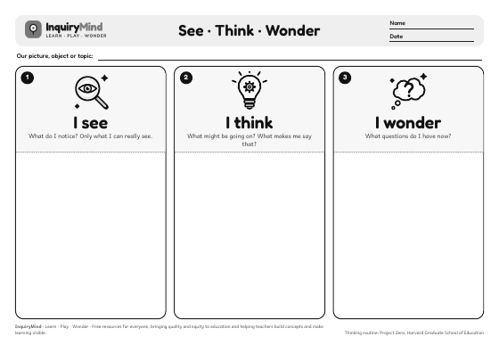
R01InquiryMind · Visible Thinking Routines (VTR)
Thinking routine organisers
Simple, printable organisers that help learners make their thinking visible: notice, wonder, explain, connect and reflect. Each routine is one A4 page in black and white. Print it, share a picture, object, story, video or question, and let the thinking begin. Free for every teacher and every classroom.
34 routinesA4 landscapeblack and whiteany subject, any grade
How to use the organisers
A4 landscape, black and white. Print one per learner, one per group, or enlarge to A3 for a class chart.
Choose a prompt
Show something worth thinking about: a picture, an object, a short video, a story, a graph or a big question.
Think and share
Give quiet thinking time first, then let learners talk in pairs before sharing with the class. Ask “What makes you say that?”
Come back to it
Keep the organisers. Return to the wonders and first ideas later in the unit and notice how thinking has grown.
Look closely and get curious
11 routinesStart a unit or a lesson: notice details, share what you already know and ask questions.
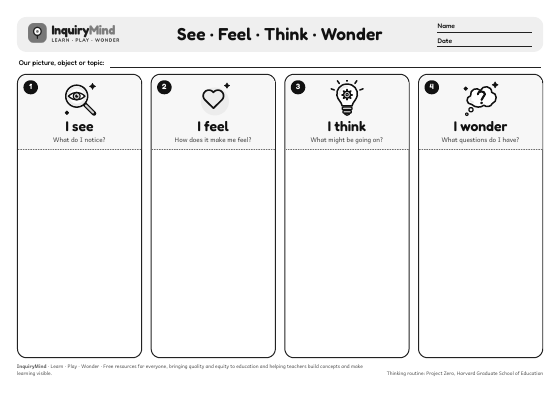
R02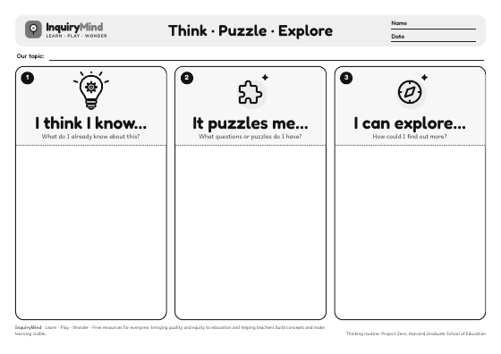
R03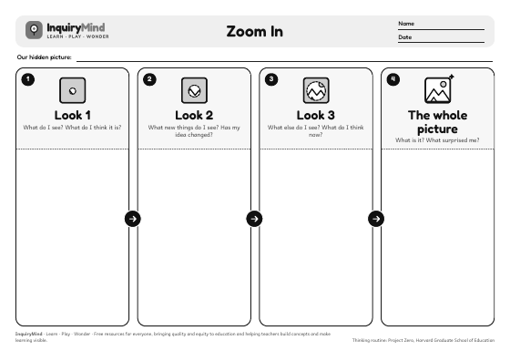
R04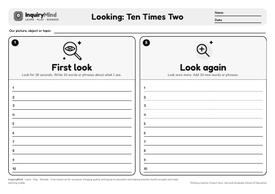
R05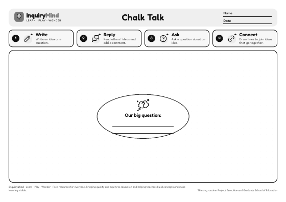
R06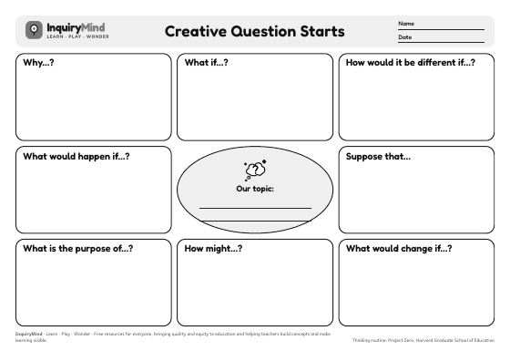
R07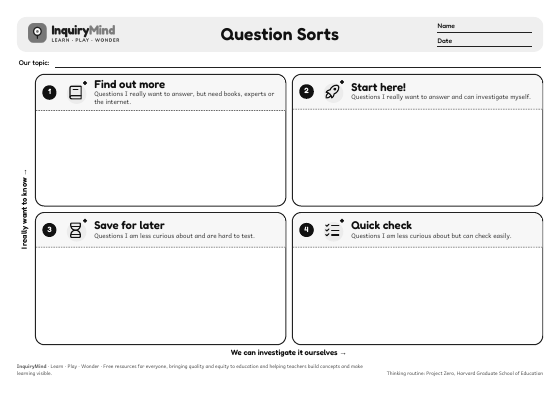
R08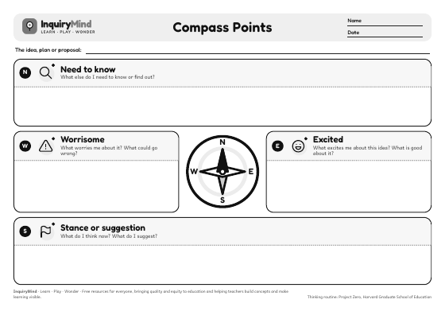
R09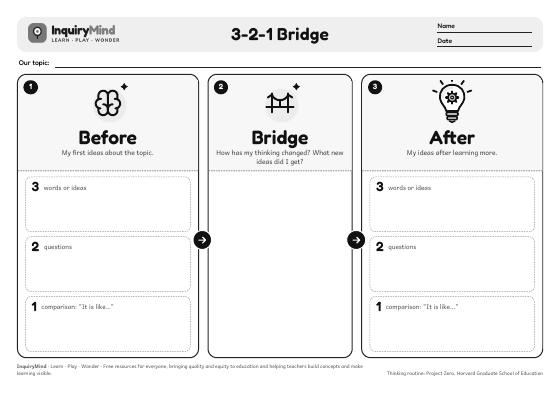
R10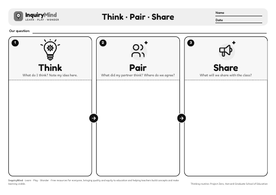
R11Dig deeper
15 routinesReason with evidence, look from different points of view and explore how things work.
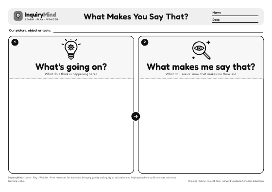
R12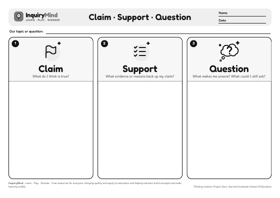
R13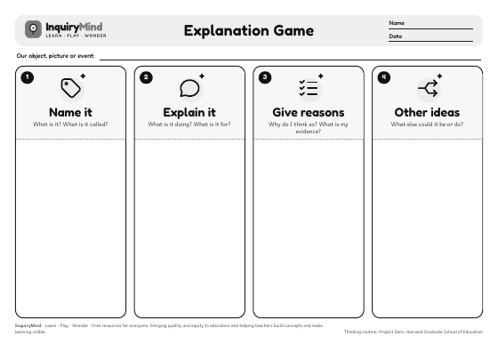
R14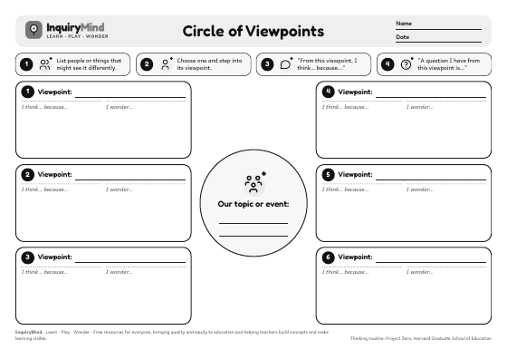
R15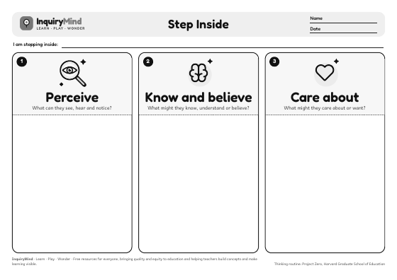
R16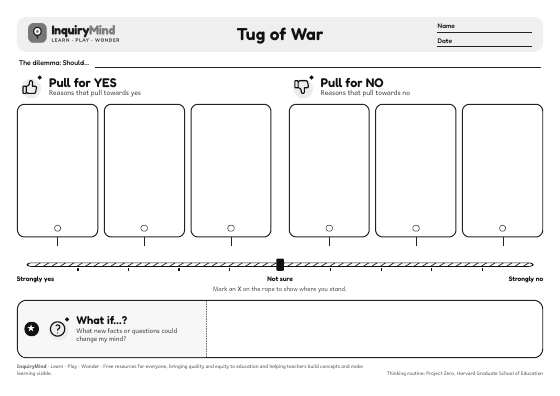
R17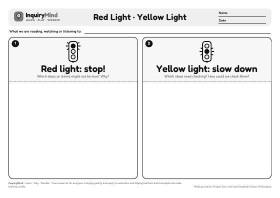
R18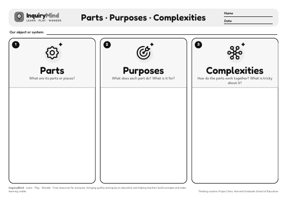
R19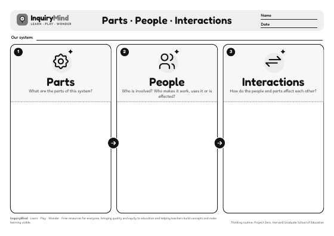
R20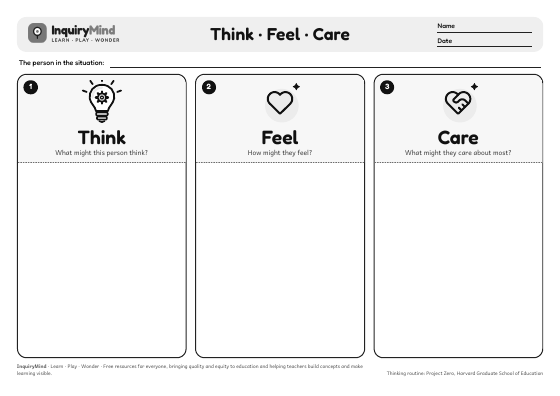
R21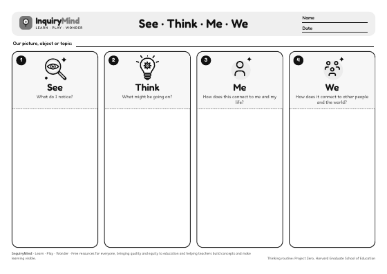
R22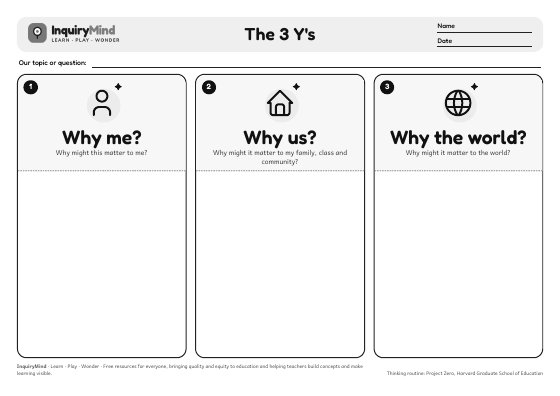
R23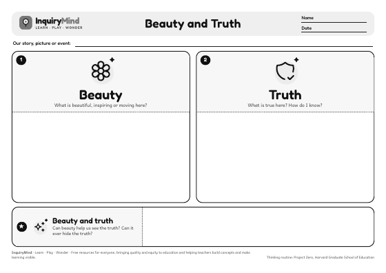
R24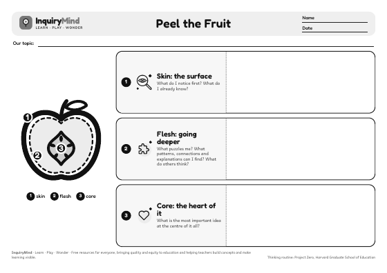
R25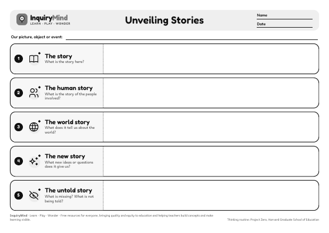
R26Sum up and reflect
8 routinesPull ideas together, capture the big idea and notice how your thinking has changed.
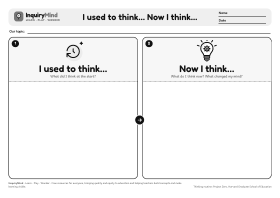
R27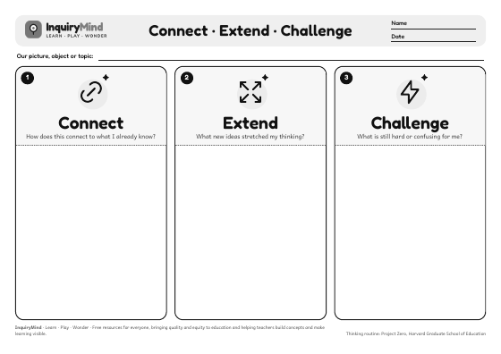
R28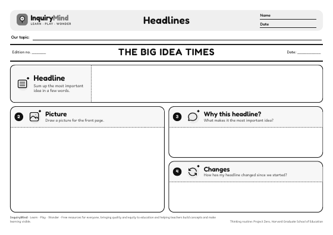
R29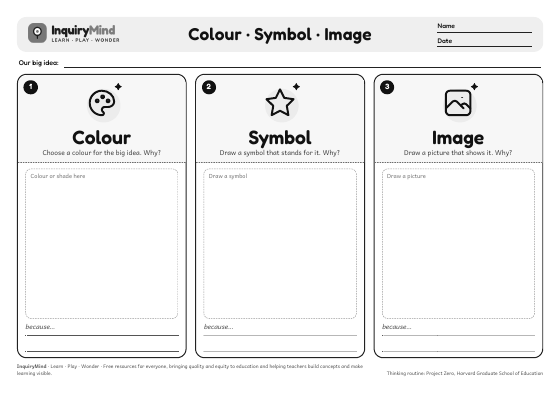
R30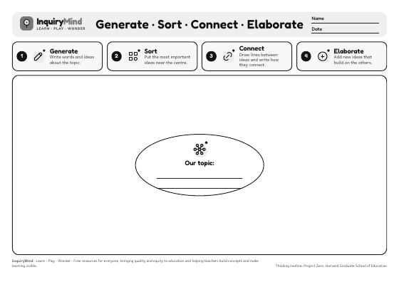
R31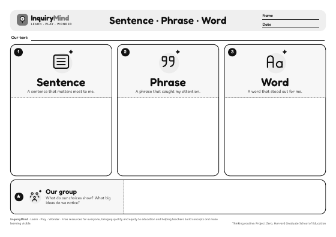
R32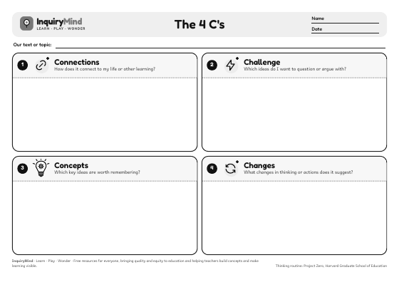
R33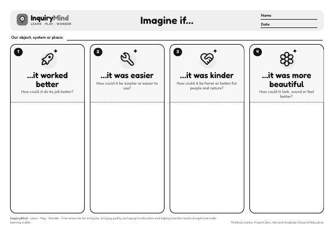
R34No routines match your search.
Credits
The thinking routines were developed by Project Zero at the Harvard Graduate School of Education. Visit Project Zero to read about each routine and its purpose. These organisers are original InquiryMind designs (layout, wording and drawings) made to support the routines in the classroom; they are not produced or endorsed by Project Zero.
Fonts: Andika and Fredoka (SIL Open Font License 1.1). Icons: Tabler Icons (MIT licence) and drawings made for InquiryMind.